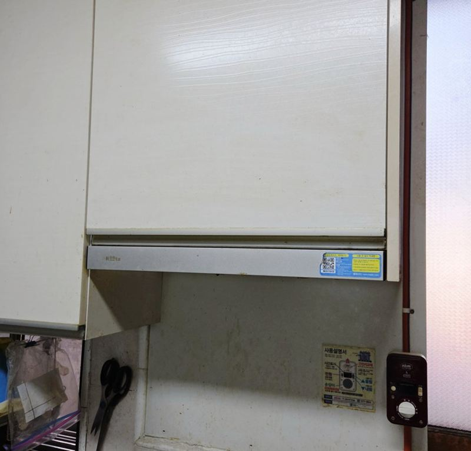
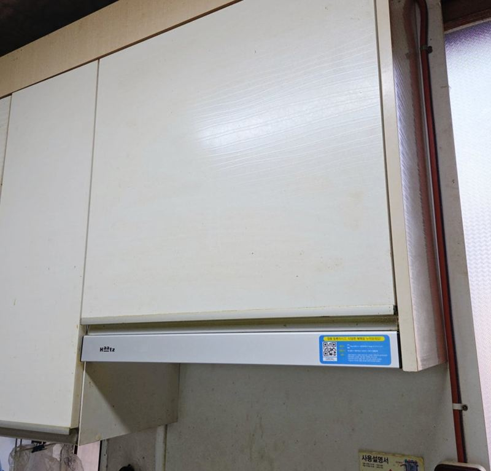
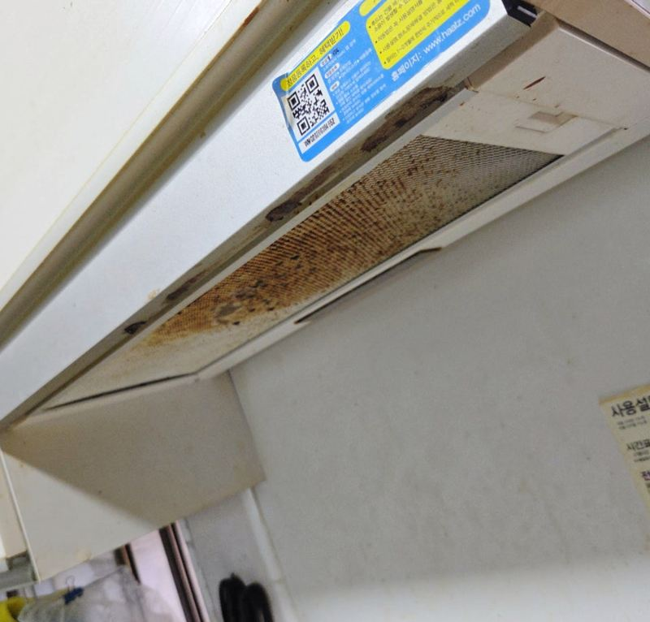
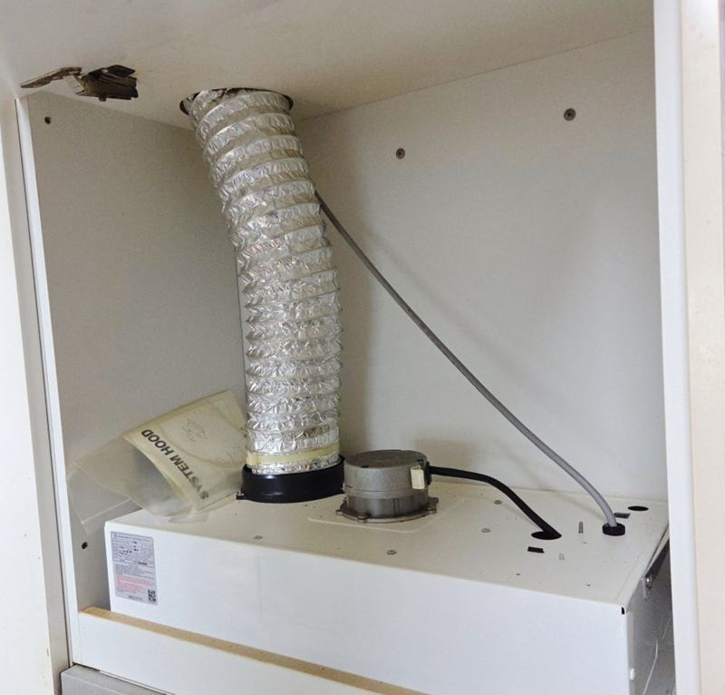
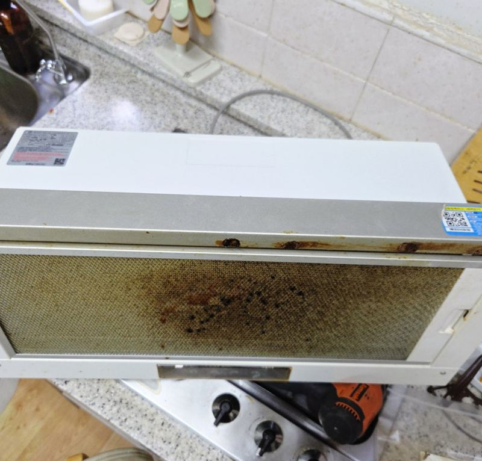
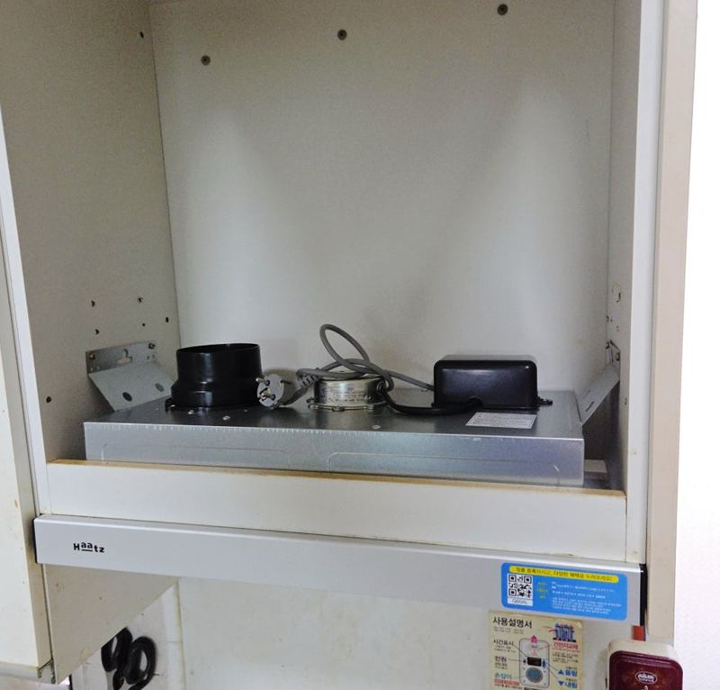
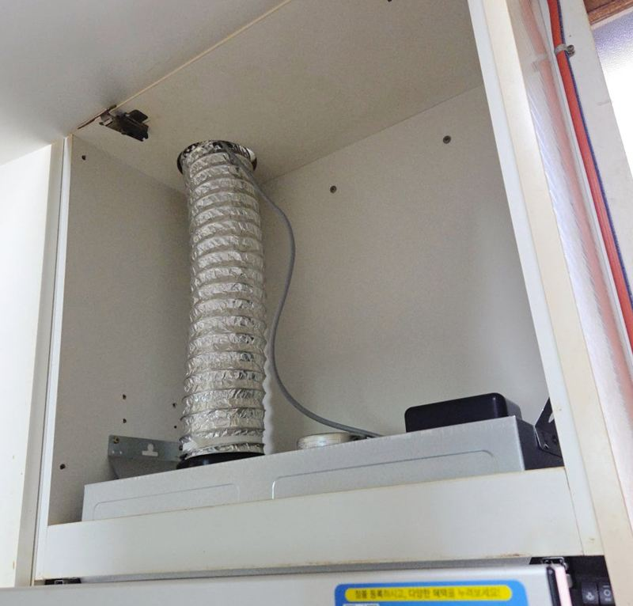

이천 오래된 슬라이딩 후드 동일 규격 교체 방법

 교체 전교체 후
교체 전교체 후← 밀어서 전후 비교 →
"슬라이딩 후드를 오래 써서 기름때가 너무 꼈어요. 흡입도 예전 같지 않은데, 같은 규격으로 바꿀 수 있을까요?" 이천 부발읍 주택이었어요. 앞판을 당겨 보니 필터와 안쪽에 기름이 두껍게 눌어붙어 있었고, 닦아서 쓰기엔 한계가 있었어요. 가로 폭과 장 안쪽 고정 위치, 자바라 방향을 확인해 같은 규격 제품을 준비하고, 옛 후드를 떼어 안쪽 오염까지 닦은 뒤 원래 자리에 새로 달았어요.
| 현장 | 이천 부발읍 주택 주방 상부장 아래 |
|---|---|
| 증상 | 기름때가 심하게 끼고 흡입이 약해짐 |
| 한 일 | 가로 폭·장 깊이·고정 위치·자바라 방향 확인 → 같은 규격 준비 → 옛 후드 분해·철거 → 장 안쪽·자바라 주변 오염 정리 → 새 후드 고정 → 자바라·전원 연결 → 작동 확인 → 사용법 안내 → 폐제품 수거 |
| 장점 | 상부장을 손대지 않고 같은 자리에 교체 |
청소로 될까, 바꿔야 할까
후드는 요리할 때마다 연기와 기름을 빨아들여서, 쓴 해가 길수록 안쪽에 기름이 층층이 쌓여요. 겉 필터는 떼어 닦을 수 있지만 모터 주변과 안쪽 통로는 손이 안 닿아요. 겉을 닦아도 냄새가 남고 흡입이 약하게 느껴진다면 안쪽 문제라 교체가 나은 경우가 많아요.


같은 규격으로 바꾸려면
슬라이딩 후드는 가로 폭이 600, 900처럼 정해져 있어요. 같은 회사라도 폭이 다르면 상부장 칸에 맞지 않아 장을 새로 가공해야 해요. 그래서 교체 전에 네 가지를 함께 봤어요.
- 가로 폭상부장 칸에 꼭 맞아야 해요.
- 장 안쪽 깊이본체가 들어갈 깊이가 나오는지 봐요.
- 고정 위치나사 자리가 기존과 맞으면 장에 구멍을 더 안 내도 돼요.
- 자바라 방향배기구로 꺾임 없이 이어지는지 확인해요.
이번엔 같은 크기 모델을 준비해 상부장을 거의 손대지 않고 원래 자리에 맞출 수 있었어요.
떼어 낸 뒤 안쪽까지 정리
분해·철거
옛 후드를 분해해 들어냈어요. 슬라이딩 구조는 설치된 상태에선 안쪽이 안 보여, 떼고 나서야 오염 상태가 드러나요.


오염 정리
그동안 닦기 어려웠던 장 안쪽과 자바라 주변을 닦았어요. 이걸 건너뛰면 새 후드를 달아도 주변 냄새가 그대로 남아요.
새 후드 고정·연결
원래 위치에 맞춰 고정하고 흔들림이 없는지 본 뒤, 자바라와 전원을 연결했어요.


작동 확인과 안내
슬라이딩 앞판이 부드럽게 움직이는지, 흡입과 조명이 제대로 되는지 확인했어요. 새 모델은 버튼 위치와 조작감이 달라서 사용법과 필터 관리 방법을 설명드렸어요.
떼어 낸 후드는 현장에서 가져가 처리했어요. 고객분은 "같은 규격이라 주방장이 어색하게 달라지지 않았고, 안쪽까지 깨끗해져 좋다"고 하셨어요.
교체 후 오래 쓰려면
새 후드도 필터를 오래 안 닦으면 금방 예전처럼 돼요. 요리를 자주 하는 집이라면 한두 달에 한 번 필터를 떼어 따뜻한 물과 세제로 닦아 주세요. 앞판 레일에 묻은 기름도 가끔 닦아 주면 슬라이딩이 부드럽게 유지돼요.
요리할 때는 시작 전에 후드를 먼저 켜고, 끝난 뒤에도 잠시 더 돌려 두면 남은 연기와 냄새가 빠져요.
슬라이딩 후드 교체 질문
600을 900으로 바꿀 수 있나요?
상부장 칸을 넓혀야 해서 장 가공이 함께 필요해요.
필터만 새로 살 수 있나요?
모델에 맞는 필터가 있으면 필터만 바꿔도 돼요. 오래된 제품은 구하기 어려워요.
앞판이 끝까지 안 나와요.
레일에 기름이 굳었거나 걸림쇠가 상했을 수 있어요.
교체 전에 직접 청소해 둬야 하나요?
안 하셔도 돼요. 떼어 낸 뒤 안쪽까지 함께 정리해요.
자바라도 바꾸나요?
이번처럼 안쪽까지 닦아도 기름이 배어 있으면 새 자바라로 바꾸는 게 냄새가 덜해요.
시골 주택도 오시나요?
이천·여주·양평 등 경기 동부도 일정을 맞춰 가요.
다른 후드 현장
후드 정면과 폭, 상부장 안 자바라 사진을 보내 주세요.
전화 상담 010-4517-9872